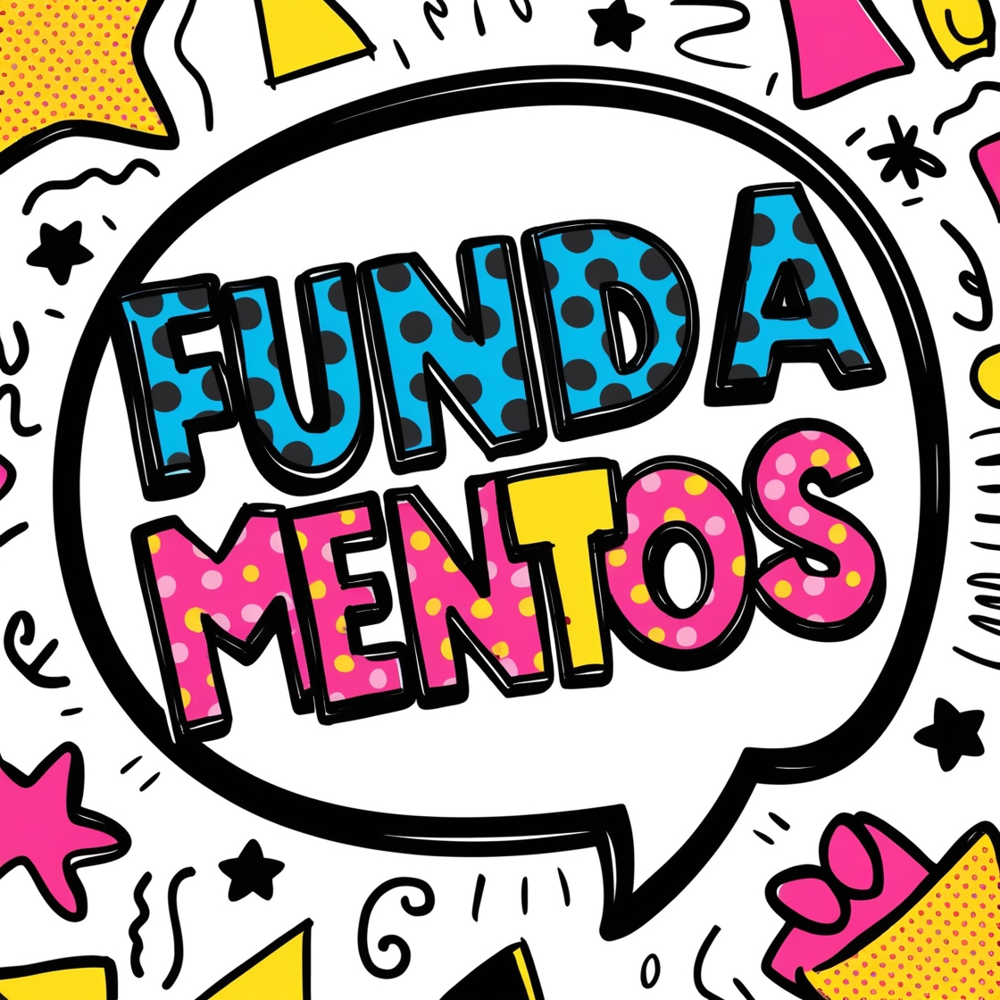

Fundamentos

Módulo 2: Intermediário
Aprimoramento de vocabulário e estruturas gramaticais intermediárias.
- Aprimoramento de Vocabulário
Expansão do vocabulário para contextos variados e uso de expressões idiomáticas.
- Vocabulário de situações do dia a dia:
- Compras: Vocabulário para interações em lojas e supermercados, incluindo termos como "price", "receipt", "discount".
- Viagens: Termos e frases úteis para aeroportos, hotéis, e transporte, como "check-in", "boarding pass", "reservation".
- Trabalho: Vocabulário relacionado ao ambiente de trabalho, cargos, e funções, como "meeting", "deadline", "colleague".
- Expressões idiomáticas e gírias comuns:
- Idioms como "break the ice", "hit the books", "let the cat out of the bag".
- Gírias comuns usadas em conversas informais, como "cool", "hang out", "awesome".
- Vocabulário de situações do dia a dia:
- Estruturas Gramaticais Intermediárias
Desenvolvimento das habilidades gramaticais com foco em tempos verbais e pronomes.
- Verbos no presente contínuo e passado simples:
- Uso do presente contínuo para ações em progresso. Ex: "I am reading", "They are studying".
- Conjugação e uso do passado simples para eventos concluídos. Ex: "I watched", "She traveled".
- Advérbios de frequência:
- Uso de advérbios como "always", "usually", "sometimes", "never" para indicar a frequência das ações.
- Posicionamento dos advérbios nas frases. Ex: "She always goes to the gym", "We never eat fast food".
- Pronomes possessivos e reflexivos:
- Uso dos pronomes possessivos (my, your, his, her, its, our, their) para indicar posse. Ex: "This is my book", "Their house is big".
- Uso dos pronomes reflexivos (myself, yourself, himself, herself, itself, ourselves, yourselves, themselves) para indicar ações reflexivas. Ex: "She taught herself", "They enjoyed themselves".
- Verbos no presente contínuo e passado simples:
← Voltar para a página principal